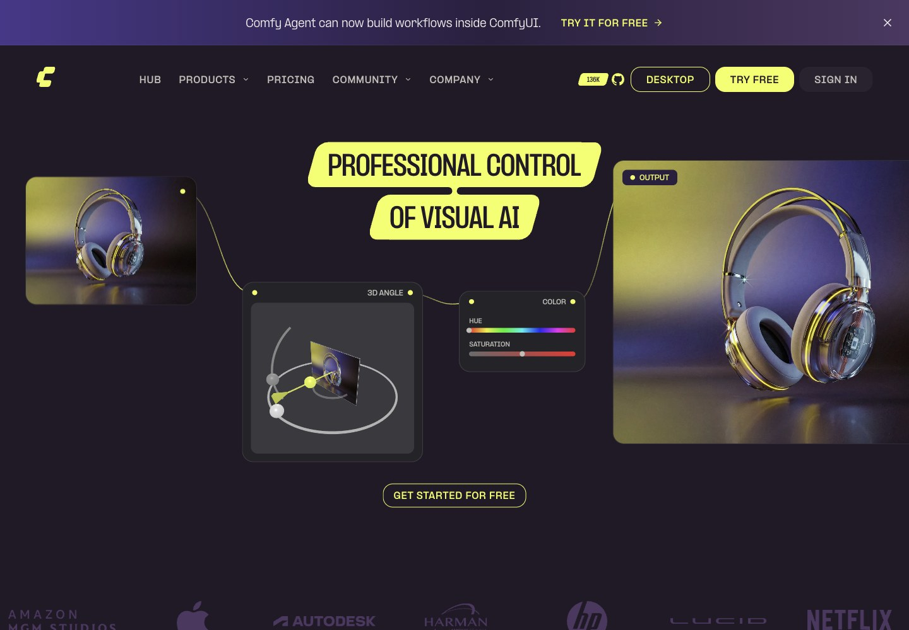
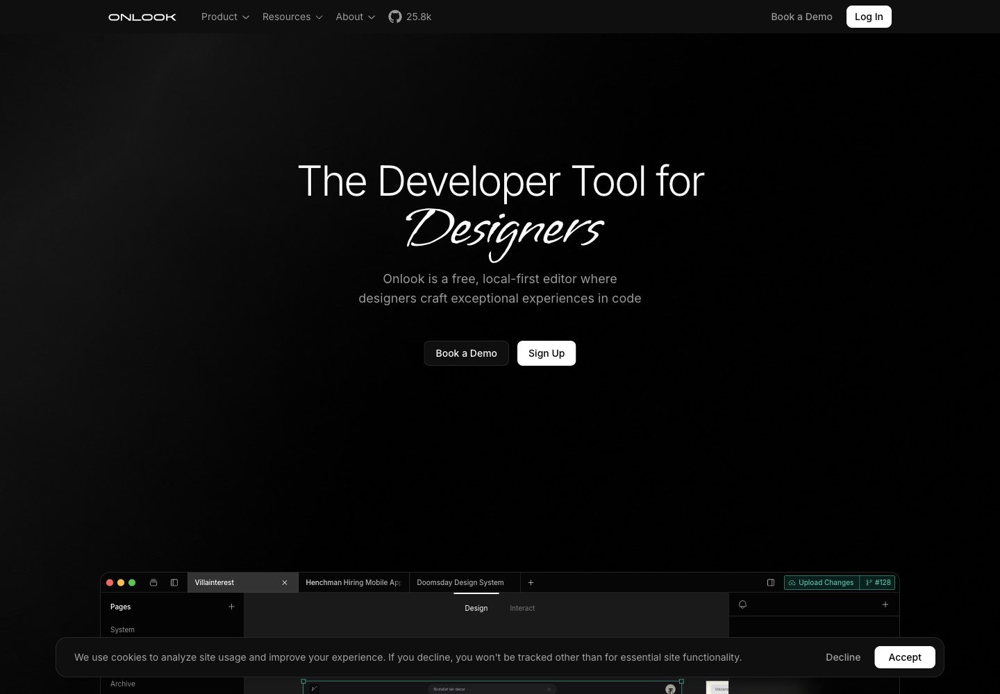
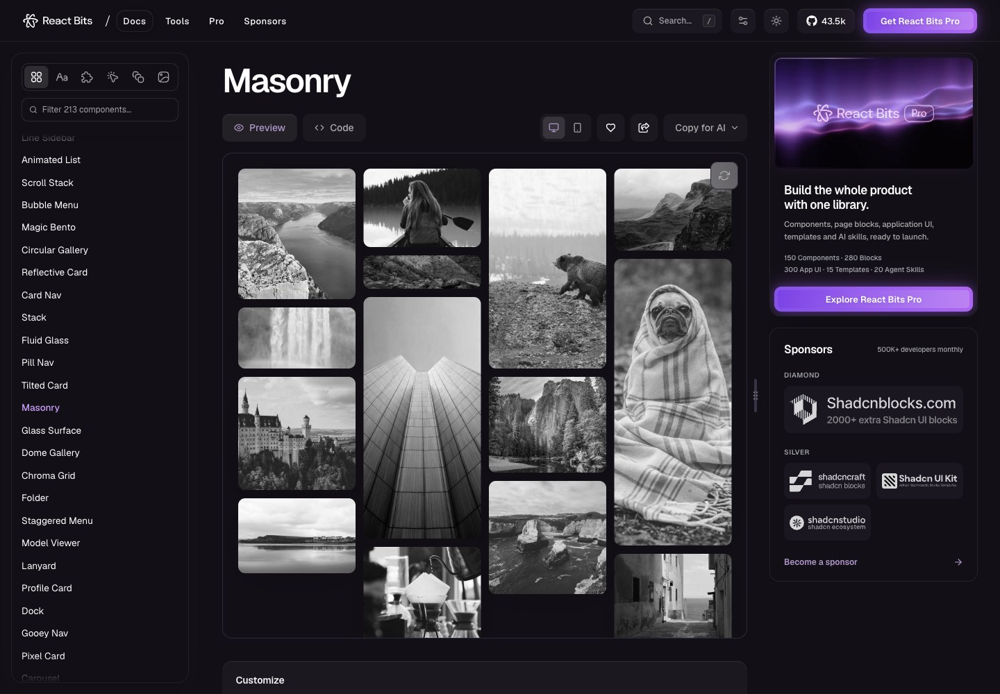
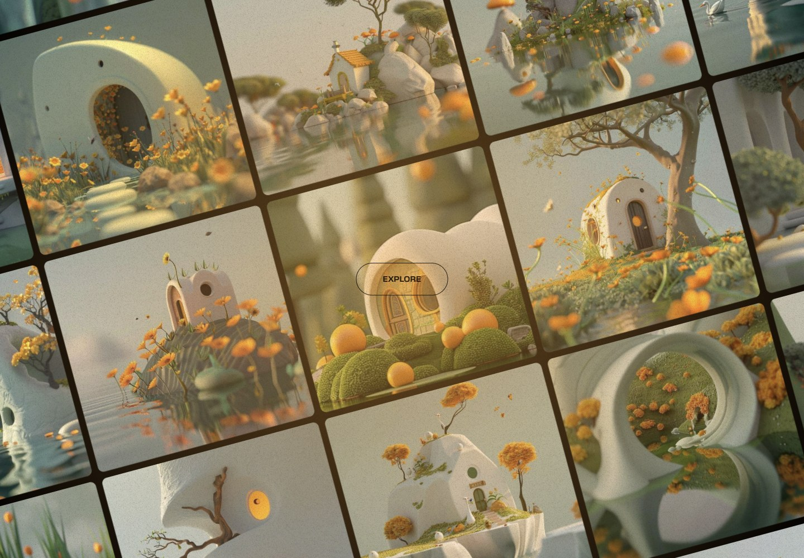
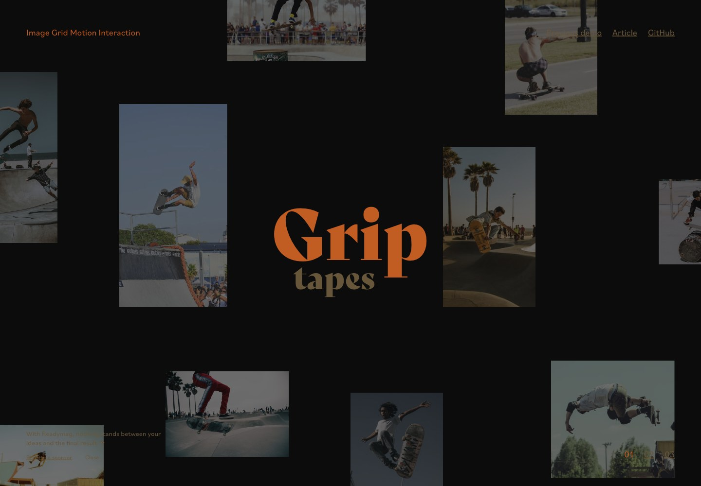
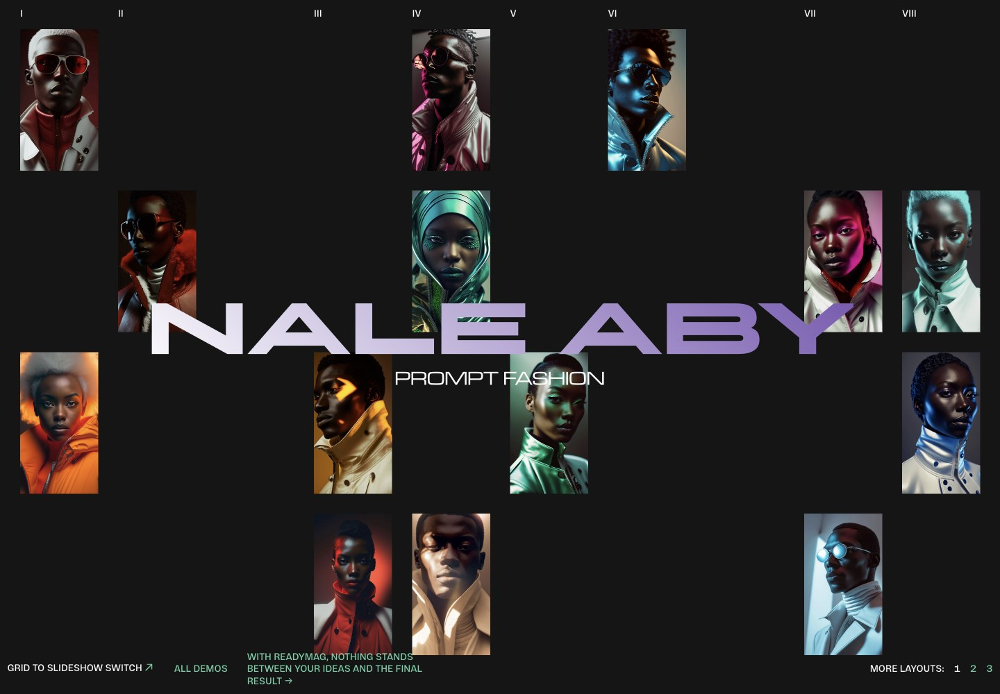
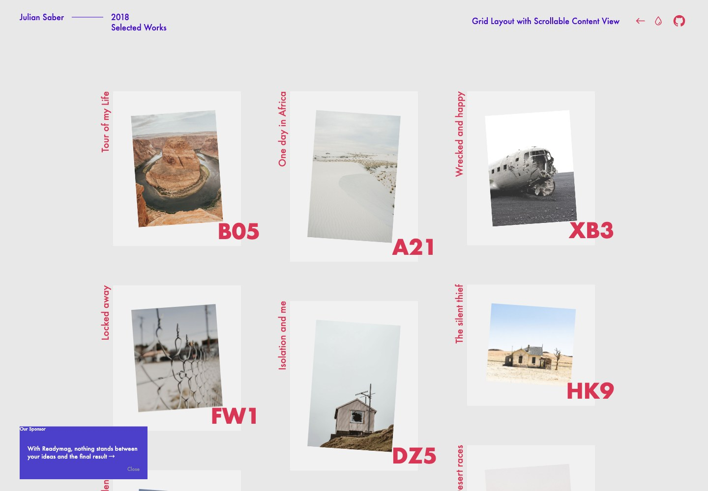
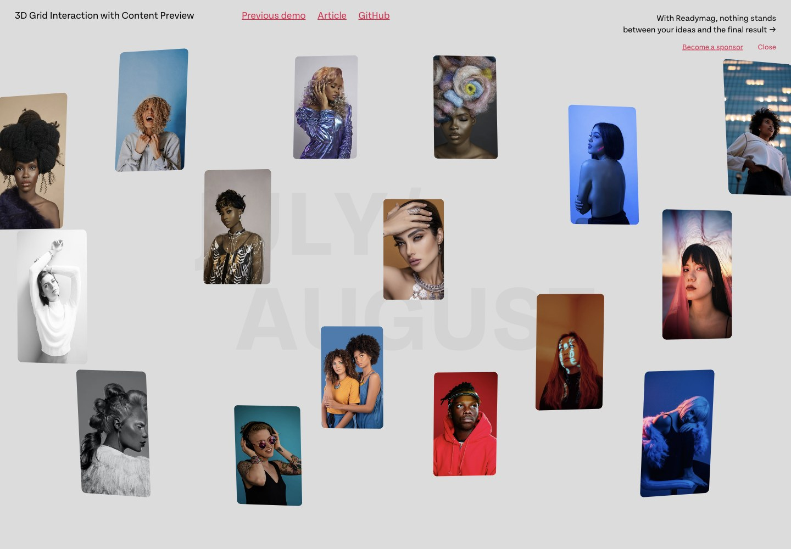
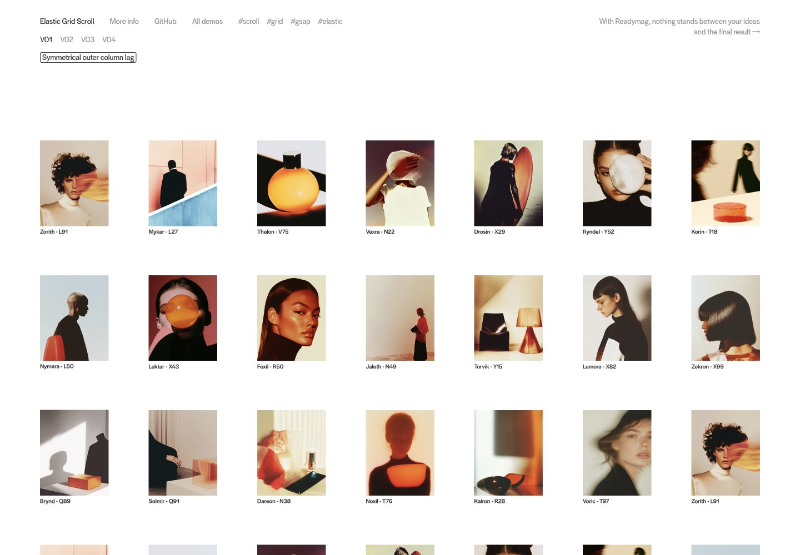

ComfyAI 产品 / 展示与进入平台
↗
Onlook科技产品 / 品牌与登录
↗
React Bits · Masonry组件源码 / 瀑布流
↗
Intro Grid Motion Transition艺术原稿 / 中央入口
↗
Image Grid Motion Effect艺术原稿 / 背景图集
↗
Grid to Slider艺术原稿 / 网格到全屏作品
↗Grid View Switch艺术原稿 / 多图与单图切换
↗
Grid Layout · Scrollable Content艺术原稿 / 瀑布流展开长详情
↗
3D Grid Content Preview艺术原稿 / 立体详情转场
↗
Elastic Grid Scroll艺术原稿 / 图集滚动节奏
↗